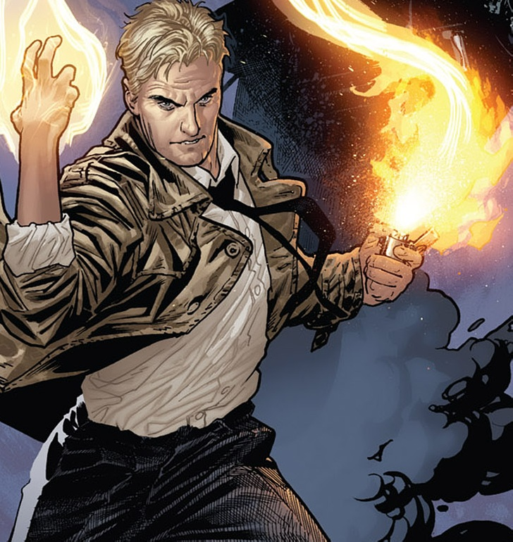

John Constantine is an anti hero character from DC comics John Constantine/Hellblazer. Constantine is the smartest and one of greatest magician in DC universe, but also a selfish person. He always try to reach the good and do the right thing but end up in bad situation or sacrifice something. He have experienced many tragedies and lost so many things, caused him became an utilitarian and selfish person.
